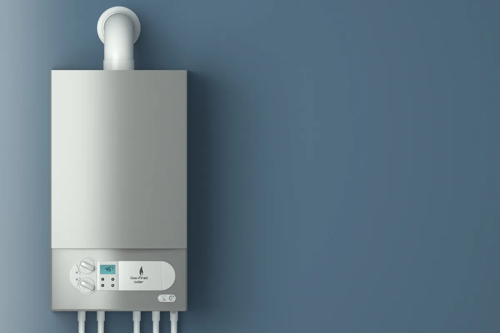

A tankless water heater is one of the best upgrades a homeowner can make for comfort, energy efficiency, and endless hot water. But if you want that performance to last, annual descaling and professional service are essential. At Angle Stop Plumbing, we help homeowners protect their investment and keep their tankless systems running at their best year after year.

What Makes Tankless Water Heaters Different?
Unlike traditional water heaters that store hot water in a tank, tankless water heaters heat water on demand. That means your unit works hard every time hot water flows through it. Over time, minerals in the water - especially calcium and magnesium - begin to build up inside the heat exchanger.
This buildup is known as scale. And scale is one of the biggest reasons tankless water heaters lose performance, work harder than they should, and wear out sooner than expected.
Why Descaling Matters
Descaling removes mineral buildup from the inside of the tankless system. If that buildup is ignored, it can lead to several problems:
- Reduced efficiency because the system has to work harder to heat water.
- Lower water flow caused by restriction inside the unit.
- Inconsistent hot water temperatures that affect comfort and convenience.
- Higher utility costs as the heater loses efficiency.
- Increased wear and tear on internal parts.
- Shorter system lifespan if maintenance is delayed too long.
Routine descaling helps your tankless water heater stay clean, efficient, and dependable.
Why Once a Year Is the Minimum
At a minimum, a tankless water heater should be descaled and serviced once a year. This schedule helps remove buildup before it becomes a major issue and gives a plumbing professional the chance to inspect the system for early signs of trouble.
Annual service is important because it helps:
- Keep the heat exchanger clean
- Maintain strong, reliable performance
- Support energy efficiency
- Catch small issues before they turn into expensive repairs
- Extend the life of the water heater
Homes with hard water may need more frequent service, but once a year is the baseline every tankless owner should follow.
What Professional Tankless Water Heater Service Includes
Professional maintenance is about more than just flushing the system. A full tankless water heater service can include:
- Descaling the heat exchanger
- Inspecting valves and connections
- Checking for leaks or corrosion
- Reviewing burner performance
- Cleaning components as needed
- Confirming safe and proper operation
- Identifying worn parts before they fail
This kind of preventive care helps your unit stay reliable and helps you avoid surprise breakdowns.
Warning Signs Your Tankless Water Heater May Need Service
If your unit has gone too long without maintenance, you may start noticing signs that service is overdue:
- Hot water is not as consistent as it used to be
- Water flow seems weaker
- The system takes longer to heat water
- Utility bills are rising without another clear cause
- The unit is making unusual noises
- Error codes are appearing
These are all signs that your tankless water heater may need attention from a professional plumber.
Protect Your Investment with Angle Stop Plumbing
Your tankless water heater is built for long-term performance, but it needs regular care to deliver the comfort and efficiency you expect. Trusting Angle Stop Plumbing for annual descaling and maintenance helps ensure a long-lasting tankless water heater experience.
Our team understands how to properly service tankless systems, remove damaging scale buildup, and keep your water heater operating the way it should. Whether your unit is due for routine maintenance or starting to show signs of trouble, Angle Stop Plumbing is ready to help.
Schedule Tankless Water Heater Service Today
If it has been a year or more since your last tankless water heater service, now is the time to take care of it. Regular maintenance can help protect your system, improve performance, and extend its lifespan.
Call Angle Stop Plumbing today to schedule your tankless water heater descaling and annual service and enjoy dependable hot water for years to come.